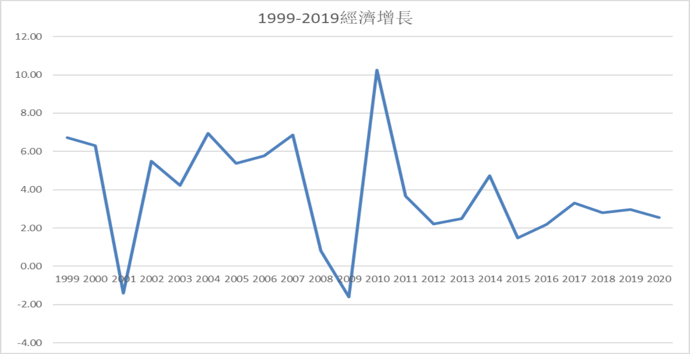

經濟表單
台灣經濟成長率
台灣失業率
台灣物價上漲率

經濟成長率
一國的經濟成長指該國實質總產出或每人平均實質國民所得持續不斷增加的現象。
通常所謂經濟成長率是指「實質總產出」或「實質國內生產毛額」的年增率。 國際間多以經濟成長率作為表示一國經濟實力、人民福祉和國際地位的指標
資料出處:中華民國統計網
失業率
失業率是指失業人口占勞動人口的比率，只在衡量閒置中的勞動產能
物價上漲率
經濟學上，通貨膨脹率為物價平均水準的上升幅度。 以氣球來類比，若其體積大小為物價水準，則通貨膨脹率為氣球膨脹速度。 或說，通貨膨脹率為貨幣購買力的下降速度。